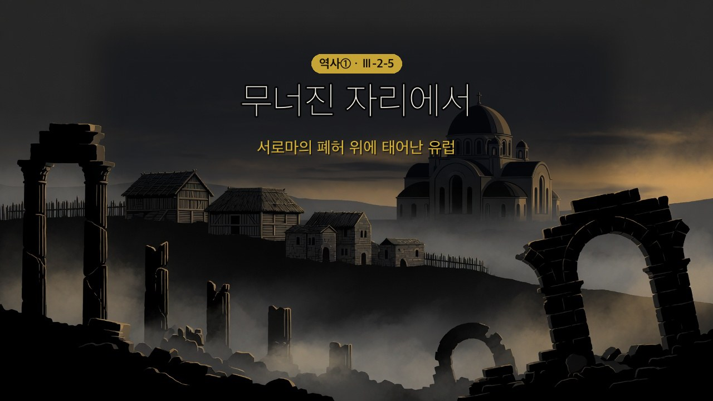

역사① Ⅲ단원 3-2-5 — 유럽 세계의 형성 (정답·모범답안)
서로마가 무너진 자리에, 어떻게 '유럽'이 태어났을까?

역사① Ⅲ단원 3-2-5 — 유럽 세계의 형성 (정답·모범답안)
🎙️ 지난 시간 이슬람교가 100년 만에 세 대륙으로 퍼졌던 거 기억나? 같은 시기 유럽에선 정반대 일이 일어났어. 천 년을 버틴 로마 제국의 서쪽이 게르만족한테 무너졌거든(476). 근데 반전 — 그 폐허 위에서 새로운 유럽이 자라나. 게르만 문화 + 로마 문화 + 크리스트교가 어우러지면서 말이야.
📌 학습 목표
- 중세 서유럽 세계가 형성되는 과정을 설명할 수 있다.
- 비잔티움 제국의 정치적·문화적 특징을 파악할 수 있다.
✨ 오늘의 고급 단어
| 낱말 | 쉽게 말하면 | 한자 뜯어보기 | 문장 속에서 |
| 용병(傭兵) | 돈을 받고 싸워 주는 군인 | 용(傭, 품삯) + 병(兵, 군사) | "서로마는 게르만족 출신 용병 대장에게 멸망했다." |
| 성상(聖像) | 예수·성모·성인을 그리거나 조각한 것 | 성(聖, 거룩) + 상(像, 모양) | "황제가 성상 숭배를 금지했다." |
| 수장(首長) | 우두머리 | 수(首, 머리) + 장(長, 어른) | "황제가 교회의 수장 역할까지 맡았다." |
| 융합(融合) | 서로 녹아 하나가 되는 것 | 융(融, 녹을) + 합(合, 합할) | "그리스·로마 문화와 헬레니즘 문화가 융합되었다." |
🎯 여기가 핵심! 네 낱말이 각각 차시의 한 장면을 연다 — 용병(서로마 멸망·1단계) → 융합(새 유럽의 형성·3단계) → 수장(황제 교황주의·4단계) → 성상(동서 교회 분리·4단계). 어휘를 훑는 것만으로 오늘 흐름이 한 번 지나간다.
용병은 학생이 잘 놓치는 지점이다 — 로마를 무너뜨린 게 외부의 적이 아니라 로마가 돈 주고 고용한 군인이었다는 아이러니를 짚으면 1단계 인상이 훨씬 깊어진다.
📖 1단계: 천 년 제국이 무너지다 — 게르만족의 대이동
유럽 북부에 살던 게르만족은 4세기 말 ①훈족의 압박을 받아 대규모로 이동하여, ②서로마제국 곳곳에 나라를 세웠다. 이 과정에서 서로마 제국은 게르만족 출신 용병 대장에게 멸망하였다(476).
(교과서 원문: "유럽 북부에 살던 게르만족은 4세기 말 훈족의 압박을 받아 대규모로 이동하여 서로마 제국 곳곳에 나라를 세웠다. 이 과정에서 서로마 제국은 게르만족 출신 용병 대장에게 멸망하였다(476)." — 비상교육 역사①(이병인) p.86)
🎯 여기가 핵심! '도미노' 인과를 잡아 주자 — 훈족(중앙아시아 유목민)의 서진 → 게르만족이 로마 영토로 밀려 이동 → 서로마 멸망(476). 연도 476은 빈칸에서 제외하되 구두로 강조. 서로마를 끝낸 것이 외부 침략군이 아니라 로마가 고용한 게르만 용병 대장이었다는 점이 반전 포인트.
📖 2단계: 폐허에서 자란 새 강자 — 프랑크 왕국
게르만족이 서유럽에 세운 여러 나라 중 갈리아 지방에 자리 잡은 ③프랑크 왕국이 오랫동안 번성하였다. 5세기 말 이 왕국은 ④크리스트교를 받아들여 로마 교회의 지지를 얻었고, 8세기 초에는 서유럽에 쳐들어온 이슬람 세력을 막아 내며 크리스트교 세계를 보호하였다.
(교과서 원문: "게르만족이 서유럽에 세운 여러 나라 중 갈리아 지방에 자리 잡은 프랑크 왕국은 오랫동안 번성하였다. 5세기 말 프랑크 왕국은 크리스트교를 받아들여 로마 교회의 지지를 얻었다. 8세기 초에는 서유럽에 쳐들어온 이슬람 세력을 막아 내며 크리스트교 세계를 보호하였다." — 비상교육 역사①(이병인) p.86)
🎯 여기가 핵심! 프랑크가 최강자가 된 이유 = 로마 교회와 같은 크리스트교(니케아파) 수용 → 로마 교회의 지지 확보. 다른 게르만 나라들이 다른 교파를 믿어 로마인과 갈등한 것과 대비된다. 8세기 초 이슬람 세력 격퇴(투르·푸아티에 전투)로 '크리스트교 세계의 방패'가 된 것도 교황과의 결속을 굳혔다.
⚠️ 교과서 밖 용어 — 판서·구두 사용 주의: 니케아파(아타나시우스파)·아리우스파·니케아 공의회는 교과서·교사용 교과서에 한 번도 나오지 않는다(3-2 전수 확인, 2026-08-17). 교과서가 말하는 것은 "크리스트교를 받아들여 로마 교회의 지지를 얻었다"(p.86)까지다. 시험 출제·서술형 채점 기준으로 쓸 수 없다. 학계 표준 표기는 '아타나시우스파'보다 '니케아파'.
📖 "그럼 왜 게르만족은 다른 교파였나?"의 배경은 자료편 §2-a — 신념이 아니라 타이밍이었다는 인과(공인 직후 논쟁 → 아리우스파 우세기에 게르만 선교 → 국경 밖이라 제국의 정리가 미치지 않음 → 프랑크는 늦게 개종해 바뀐 뒤의 답을 고름)와, 짚기로 했을 때 쓸 구두 스크립트 30초가 거기 있다.
📖 3단계: '유럽의 아버지' — 카롤루스 대제
프랑크 왕국의 전성기를 이끈 ⑤카롤루스 대제는 영토를 넓히고 정복한 지역에 크리스트교를 전파하였다. 이에 로마 교황은 그에게 ⑥서로마 황제의 관을 수여하였다(800). 그는 곳곳에 학교를 세워 학문과 예술을 일으켰고, 이로써 게르만 문화·로마 문화·크리스트교가 어우러진 서유럽 문화의 기틀이 마련되었다. 그가 죽은 뒤 프랑크 왕국은 ⑦베르됭 조약·메르센 조약으로 서프랑크·중프랑크·동프랑크로 나뉘었는데, 이는 각각 오늘날 ⑧프랑스·이탈리아·독일의 기원이 되었다.
(교과서 원문: "프랑크 왕국의 전성기를 이끈 카롤루스 대제는 영토를 넓히고, 정복한 지역에 크리스트교를 전파하였다. 이에 로마 교황은 카롤루스 대제에게 서로마 황제의 관을 수여하였다(800). … 이로써 게르만 문화와 로마 문화, 크리스트교가 어우러진 서유럽 문화의 기틀이 마련되었다. … 베르됭 조약, 메르센 조약으로 서프랑크, 중프랑크, 동프랑크로 나뉘었다. … 세 왕국은 오늘날의 프랑스, 이탈리아, 독일의 기원이 되었다." — 비상교육 역사①(이병인) p.86)
🎯 여기가 핵심! 서유럽 문화 = 게르만(힘) + 로마(제도·라틴) + 크리스트교(신앙) 의 융합. 이 합성이 카롤루스 대제 때 완성되어 그를 '유럽의 아버지'라 부른다. 800년 교황의 서로마 황제 대관은 '게르만 왕국 = 로마의 계승자'를 선언한 사건. 서·중·동프랑크 → 프랑스·이탈리아·독일 기원은 객관식 단골.

📖 4단계: 무너지지 않은 동쪽 — 비잔티움 제국
서로마 제국이 멸망한 뒤에도 동로마, 곧 비잔티움 제국은 약 천 년 동안 더 지속되었다. 비잔티움 제국에서는 황제가 정치적·군사적 지배자이자 교회의 수장 역할을 함께 하였다. 6세기 전성기를 이끈 ⑨유스티니아누스황제는 옛 로마 제국 영토의 상당 부분을 회복하고, 『⑩유스티니아누스 법전』을 편찬하였으며 ⑪성 소피아 대성당(아야 소피아)을 세웠다.
(교과서 원문: "비잔티움 제국은 서로마 제국이 멸망한 뒤에도 약 천 년 동안 더 지속되었다. 비잔티움 제국에서는 황제가 정치적·군사적 지배자이자 교회의 수장 역할을 하였다. 6세기 비잔티움 제국을 전성기로 이끈 유스티니아누스 황제는 옛 로마 제국 영토의 상당 부분을 회복하였다. … 그는 『유스티니아누스 법전』을 편찬하고 성 소피아 대성당(아야 소피아)을 세웠다." — 비상교육 역사①(이병인) p.86~87)
8세기 들어 비잔티움 제국의 황제가 ⑫성상 숭배를 금지하면서 크리스트교 세력은 동서로 나뉘어 대립하였다. 오랜 논쟁 끝에 교회는 로마 교황을 중심으로 하는 ⑬로마 가톨릭교회와 비잔티움 제국의 ⑭그리스 정교로 나뉘었다.
(교과서 원문: "8세기 들어 비잔티움 제국의 황제가 성상 숭배를 금지하면서 크리스트교 세력은 동서로 나뉘어 대립하였다. … 동·서 로마 교회는 로마 교황을 중심으로 하는 로마 가톨릭교회와 비잔티움 제국의 그리스 정교로 나뉘었다." — 비상교육 역사①(이병인) p.87)
🎯 여기가 핵심! 비잔티움의 정치 특징 = 황제가 정치·군사 + 교회 수장까지 겸함(황제 교황주의). 서유럽(교황 ↔ 황제 분리)과 정반대라 비교 출제가 쉽다. 성상 숭배 금지(8세기) → 동서 교회 대립 → 로마 가톨릭(서) / 그리스 정교(동) 분리. 오늘날 서유럽=가톨릭, 동유럽·러시아=정교회의 뿌리.

📖 5단계: 천 년의 빛 — 비잔티움 문화
비잔티움 제국은 그리스 정교를 바탕으로 그리스·로마 문화와 헬레니즘 문화를 융합하여 독자적인 문화를 발전시켰다. ⑮그리스어를 공용어로 사용하고 로마의 법률을 집대성하였으며, 그리스의 고전을 연구·보존하여 이후 이탈리아에서 ⑯르네상스가 일어나는 데 크게 기여하였다. 건축에서는 거대한 돔과 모자이크 벽화로 꾸민 비잔티움 양식(성 소피아 대성당)이 발달하였고, 이 문화는 슬라브인에게도 큰 영향을 주었다.
(교과서 원문: "비잔티움 제국은 그리스 정교를 바탕으로 고대 그리스·로마 문화와 헬레니즘 문화를 융합하여 독자적인 문화를 발전시켰다. 비잔티움 제국은 그리스어를 공용어로 사용하고, 로마의 법률을 집대성하였다. 또한 그리스의 고전을 연구하고 보존하여 이후 이탈리아에서 르네상스가 일어나는 데 크게 기여하였다. … 비잔티움 양식을 대표하는 성 소피아 대성당은 벽 위에 거대한 돔을 올리고 모자이크 벽화로 내부를 장식하였다. … 슬라브인의 역사와 문화에도 많은 영향을 주었다." — 비상교육 역사①(이병인) p.88)
🎯 여기가 핵심! 언어=그리스어(서유럽 라틴어와 대비), 법=로마법 집대성(유스티니아누스 법전과 연결). 비잔티움이 그리스 고전을 보존 → 훗날 이탈리아 르네상스의 불씨가 된 인과는 시험에서 자주 묻는다. 건축=성 소피아 대성당(돔+모자이크), 영향=슬라브인(러시아 정교). ※'키릴 문자'는 교과서·지도서 미수록 외부 지식이므로 R3/R4 출처로 달지 말 것.

✏️ 활동 1 — 세 조각이 된 프랑크, 오늘날은? (정답)
| 갈라진 세 조각 | 오늘날 어느 나라? |
| 서프랑크 왕국 | 프랑스 |
| 중프랑크 왕국 | 이탈리아 |
| 동프랑크 왕국 | 독일 |
🎯 지도서가 주안점으로 못 박은 활동이다 — "지도를 활용하여 프랑크 왕국의 분열로 나타난 결과와 오늘날 독일, 프랑스, 이탈리아의 위치를 확인하도록 지도한다"(지도서 3-3 §5 수업의 주안점). 교과서 86쪽 분열 지도를 띄워 놓고 오늘날 유럽 지도와 겹쳐 보게 하면 정착이 빠르다.
중프랑크 → 이탈리아를 학생들이 가장 많이 틀린다. '중간'이라는 말 때문에 독일을 고르는데, 중프랑크는 남북으로 긴 띠 모양이라 이탈리아 쪽으로 내려간다. 지도에서 손가락으로 훑어 주면 해결된다.
확장 발문: "천 년도 더 된 나라 나눔이 지금 국경으로 남아 있다는 게 무슨 뜻일까?" — 역사가 현재에 닿아 있다는 감각을 주는 자리.
✏️ 활동 2 — 동쪽 제국 되짚기 (정답)
| 물음 | 답 |
| 서로마가 멸망한 뒤 비잔티움 제국은 얼마나 더 이어졌나? | 약 천 년 |
| 비잔티움 황제가 한 몸에 지녔던 두 가지 역할은? | 정치적·군사적 지배자 + 교회의 수장 |
| 성상 숭배 논쟁 끝에 갈라진 두 교회의 이름은? | 로마 가톨릭교회 / 그리스 정교 |
| 비잔티움이 보존한 그리스 고전은 훗날 무엇에 불을 댕겼나? | 르네상스 |
🎯 본문에서 답을 찾게 하는 훈련용 활동. 네 물음이 4·5단계의 뼈대를 그대로 훑으므로, 다 채우면 동쪽 제국 부분이 정리된다.
2번이 황제 교황주의의 정의다. 용어 자체는 중2에 무겁지만 "정치 1인자가 교회 우두머리까지 겸했다"는 사실은 반드시 남겨야 한다 — 서유럽(교황과 왕이 따로)과 갈리는 지점이자, 다음 단원 3-3-2(교황권)의 대비축이다.
4번은 천 년을 건너뛰는 연결이라 학생 반응이 좋다. "지금 배우는 이 제국이, 나중에 배울 르네상스의 도서관 노릇을 했다"로 닫으면 단원이 이어진다.
❓ OX 퀴즈
| 번호 | 문장 | O/X | |
| 1 | 서로마 제국은 게르만족 출신 용병 대장에게 멸망하였다. | O | |
| 2 | 카롤루스 대제는 로마 교황에게서 '서로마 황제'의 관을 받았다. | O | |
| 3 | 성상 숭배 논쟁 끝에 교회는 로마 가톨릭과 그리스 정교로 나뉘었다. | O | |
| 4 | 비잔티움 제국은 서로마가 멸망하자 곧바로 함께 멸망하였다. | X | |
| 5 | 비잔티움 제국은 라틴어를 공용어로 사용하였다. | X |
OX 해설: 1 O — 476년 게르만 용병 대장에게 멸망. 2 O — 800년 교황 레오 3세. 3 O — 8세기 성상 숭배 금지 → 동서 분리. 4 X — 핵심 함정: 서로마 멸망 뒤에도 약 천 년 더 지속. 5 X: 공용어는 그리스어(라틴어는 서유럽).
🧠 핵심 3줄 (교과서 덮고!)
복습 1회차 — 백지 회상. 정답이 정해진 칸이 아니다. 채점하지 말 것.
>
🎯 운영 요령: 수업 종료 1분 전, 교과서를 덮게 한 뒤 3줄을 쓰게 한다. "잘 쓴 3줄"이 목적이 아니라 떠올리려 애쓰는 1분이 목적이다(인출 연습). 다 쓴 뒤 펴서 스스로 대조하게 하면 자기 구멍이 그 자리에서 보인다.
자주 나오는 3줄: ① 게르만족 이동으로 서로마가 무너졌다(476) ② 프랑크 왕국·카롤루스 대제가 게르만·로마·크리스트교를 묶어 서유럽의 기틀을 만들었다 ③ 동쪽 비잔티움은 천 년 더 이어졌고 성상 논쟁으로 교회가 둘로 갈라졌다.
⚠️ 평가에 쓰지 말 것. 점수로 인식되는 순간 교과서를 몰래 보게 되고, 그러면 인출 연습이 아니라 베껴 쓰기가 된다.
💭 더 생각해 보기 (모범답안·채점 관점)
모범답안 예시: "카롤루스 대제는 게르만족의 군사력 위에 로마의 제도와 라틴 문화를 잇고, 크리스트교를 널리 전파하여 이 세 가지가 어우러진 서유럽 문화의 기틀을 마련했기 때문이다."
- 상: 게르만·로마·크리스트교 세 요소를 모두 넣고, 이들이 '어우러져 서유럽 문화의 기틀이 되었다'는 융합·계승의 의미까지 서술.
- 중: 세 요소 중 둘 이상을 넣고, 카롤루스 대제의 업적(영토 확장·크리스트교 전파·서로마 황제 대관 중 하나)과 연결.
- 하: 세 요소 중 하나만 언급하거나 단순히 '유럽을 통합해서'로만 서술.